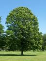

Basswood questions
5/20/2009
Question: Please excuse my ignorance, but over the last few days I have been reading my ventriloquist books and one chapter of "Winch's" book talks about figure's made of "Basswood". Is it like the Balsa wood that we use to build model planes, boats and cars?
* * * * *
Answer: It seems like another lifetime, but I loved working with balsa to build model airplanes. Balsa is so easy to work with. I do keep a few random pieces of Balsa in my shop as it does fill a need infrequently. But it is much lighter, softer, and more fragile than Basswood and it also has more pronounced grain. It would not be a good wood for 3-D carving.
{kind=link}

Note: American basswood is an important timber tree, especially in the Great Lakes States. It is the northernmost basswood species. The soft, light wood has many uses as wood products. The tree is commonly planted as a shade tree in urban areas of the eastern states where it is called American Linden.
All forms of wood carving - relief, chip, wildlife, figure, and whittling - demand certain requirements. Though any wood can be carved, very few offer a grain structure that produces superb results. A woodcarver looks for wood that displays an even grain and consistent density. For the best results, you must cut with the grain. Thus, you want a straight grain. If the grain is irregular, you might not know its direction. For this reason, woods such as basswood and butternut have become woodcarvers' favorites. http://www.americanbasswoodcarving.com/